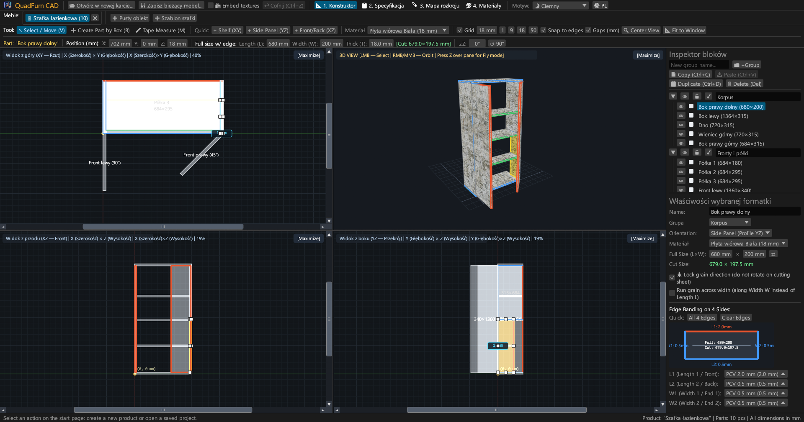
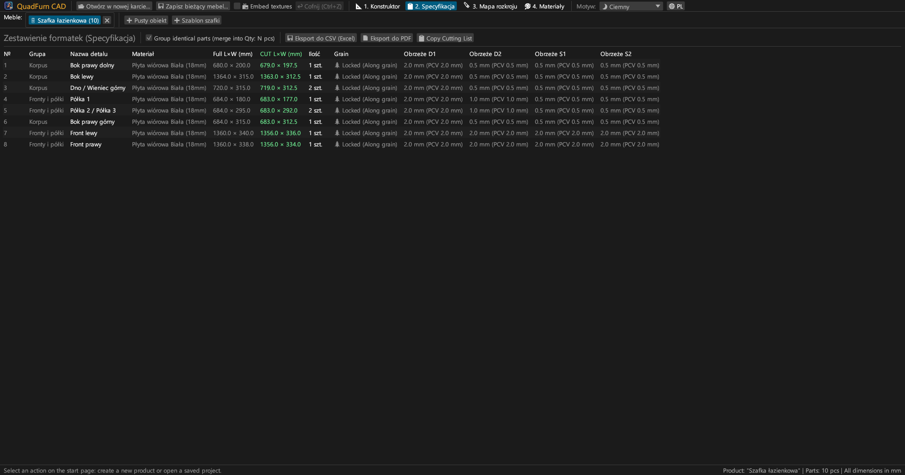
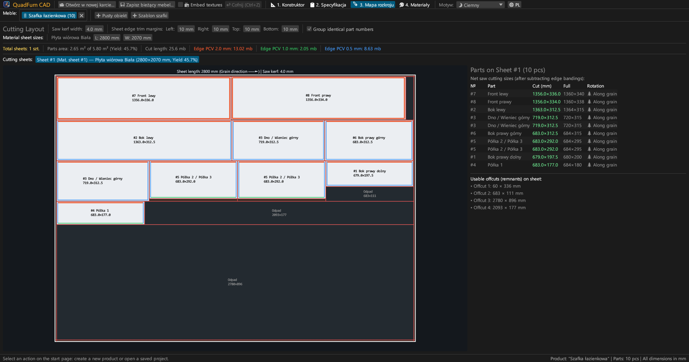
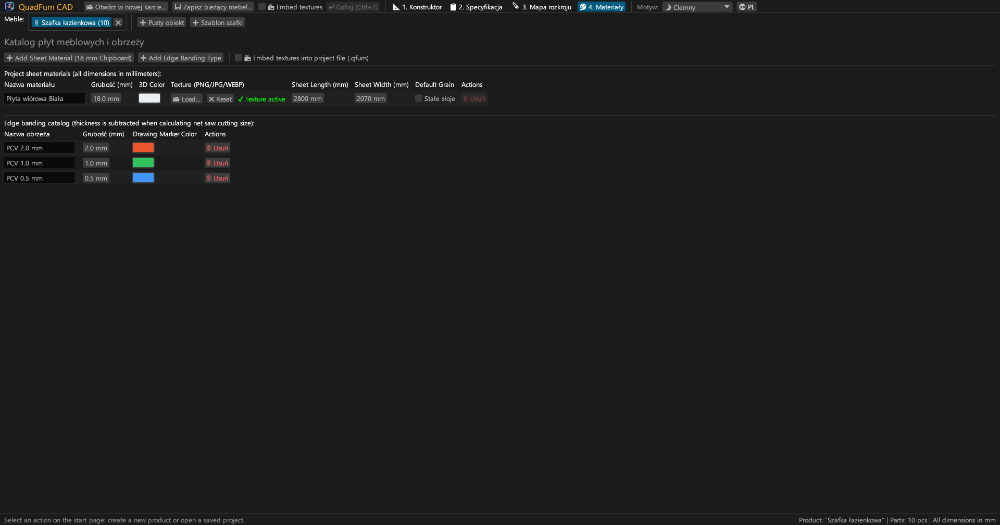
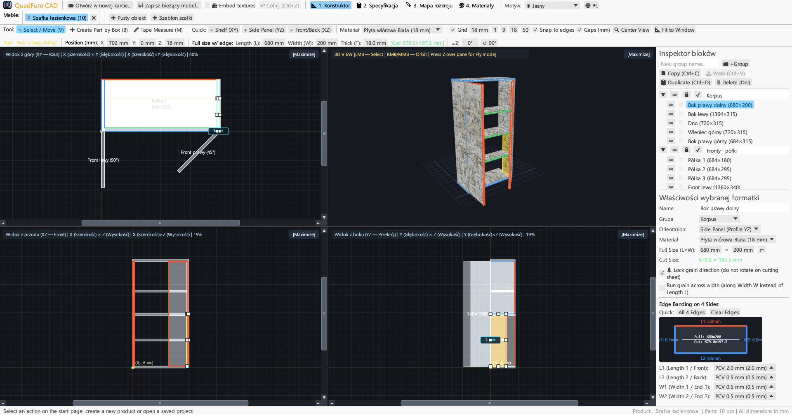
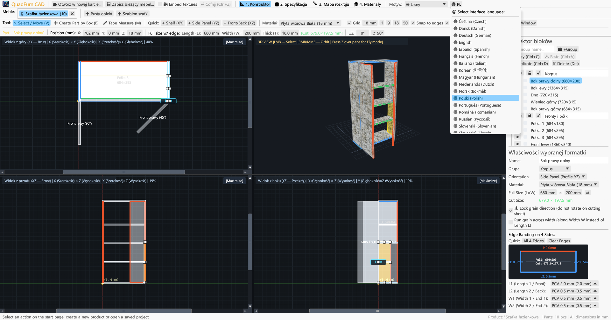

Szybki program CAD dla stolarzy. Równoczesne modelowanie w 4 rzutach, precyzyjne wprowadzanie wymiarów z kalkulatorem, odliczanie obrzeży i rozkrój.

Łączy rysowanie w 4 rzutach, precyzyjne pozycjonowanie i optymalizację rozkroju w jednej aplikacji.
Praca w trzech rzutach ortogonalnych (Rzut z góry XY, Przód XZ, Bok YZ) z paskami przewijania, przyciąganiem i oknem 3D.
Wprowadzanie współrzędnych (X, Y, Z), wymiarów (D × S × G) i kąta obrotu z kalkulatorem (np. 600-4 lub (800-36)/2).
Przypisanie obrzeża PCV/ABS (0,4–2,0 mm) do 4 krawędzi w celu natychmiastowego obliczenia wymiarów cięcia dla piły formatowej.
Szybki algorytm rozkroju uwzględniający usłojenie drewna, szerokość rzazu piły, obrzynanie płyty i ewidencję odpadów użytecznych.
Praca nad wieloma meblami jednocześnie. Kopiowanie i wklejanie elementów z automatycznym przenoszeniem materiałów.
Gotowy do druku album A4 poziomy: zestawienie elementów, rysunki w 4 rzutach, mapy rozkroju i wykaz materiałów z naddatkiem +15%.





Samodzielne pliki binarne bez zewnętrznych zależności.
Wersja przenośna z ikoną, nie wymaga instalatora.
sudo apt install ./quadfurn_0.2.2_amd64.deb
Pakiet Universal dla Apple Silicon (M1–M4) oraz Intel x86_64.
| Klawisz | Akcja | Obszar |
|---|---|---|
| V | Wybór / Przesunięcie (8 uchwytów, zaznaczanie ramką) | Widoki 2D |
| B | Tworzenie elementu ramką w bieżącej płaszczyźnie | Widoki 2D |
| M | Miarka (pomiar dokładnych odległości ΔX, ΔY, L) | Widoki 2D |
| Z | Tryb swobodnego lotu (Noclip z WASD + mysz) | Okno 3D |
| ← → ↑ ↓ | Przesunięcie o krok siatki (Shift — podwójny krok) | Widoki 2D |
| Ctrl + C / V | Kopiuj / wklej elementy (działa między kartami) | Wszystkie karty |
| Ctrl + D | Duplikuj wybrane elementy | Aktywny projekt |
| Ctrl + S | Zapisz projekt do pliku .qfurn / .json | Aktywny projekt |
| Ctrl + Z | Cofnij ostatnią akcję (do 40 kroków) | Aktywny projekt |
| Delete / Backspace | Usuń wybrane elementy | Aktywny projekt |